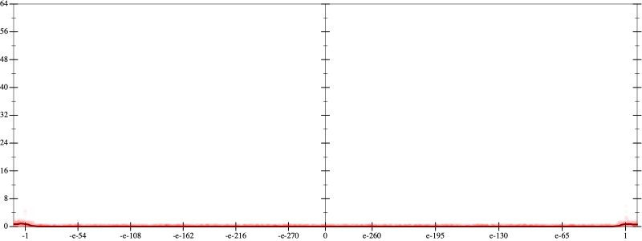
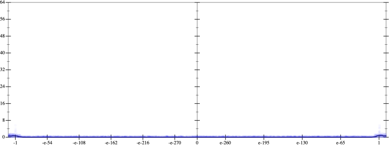
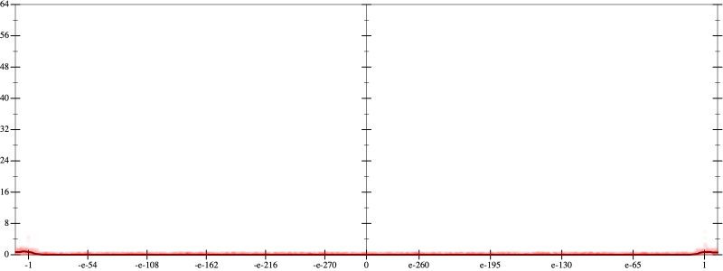
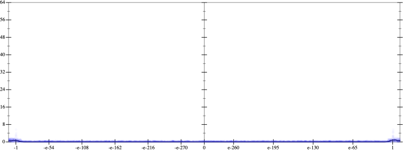

Initial program 0.0
\[\left(\left(\left(30240.0 \cdot x + -80640.0 \cdot \left(\left(x \cdot x\right) \cdot x\right)\right) + 48384.0 \cdot \left(\left(\left(\left(x \cdot x\right) \cdot x\right) \cdot x\right) \cdot x\right)\right) + -9216.0 \cdot \left(\left(\left(\left(\left(\left(x \cdot x\right) \cdot x\right) \cdot x\right) \cdot x\right) \cdot x\right) \cdot x\right)\right) + 512.0 \cdot \left(\left(\left(\left(\left(\left(\left(\left(x \cdot x\right) \cdot x\right) \cdot x\right) \cdot x\right) \cdot x\right) \cdot x\right) \cdot x\right) \cdot x\right)\]
- Using strategy
rm Applied add-cube-cbrt0.0
\[\leadsto \left(\left(\left(30240.0 \cdot x + \color{blue}{\left(\sqrt[3]{-80640.0 \cdot \left(\left(x \cdot x\right) \cdot x\right)} \cdot \sqrt[3]{-80640.0 \cdot \left(\left(x \cdot x\right) \cdot x\right)}\right) \cdot \sqrt[3]{-80640.0 \cdot \left(\left(x \cdot x\right) \cdot x\right)}}\right) + 48384.0 \cdot \left(\left(\left(\left(x \cdot x\right) \cdot x\right) \cdot x\right) \cdot x\right)\right) + -9216.0 \cdot \left(\left(\left(\left(\left(\left(x \cdot x\right) \cdot x\right) \cdot x\right) \cdot x\right) \cdot x\right) \cdot x\right)\right) + 512.0 \cdot \left(\left(\left(\left(\left(\left(\left(\left(x \cdot x\right) \cdot x\right) \cdot x\right) \cdot x\right) \cdot x\right) \cdot x\right) \cdot x\right) \cdot x\right)\]
Taylor expanded around 0 62.9
\[\leadsto \left(\left(\left(30240.0 \cdot x + \left(\sqrt[3]{-80640.0 \cdot \left(\left(x \cdot x\right) \cdot x\right)} \cdot \color{blue}{e^{\frac{1}{3} \cdot \left(\log \left(-80640.0\right) + 3 \cdot \log x\right)}}\right) \cdot \sqrt[3]{-80640.0 \cdot \left(\left(x \cdot x\right) \cdot x\right)}\right) + 48384.0 \cdot \left(\left(\left(\left(x \cdot x\right) \cdot x\right) \cdot x\right) \cdot x\right)\right) + -9216.0 \cdot \left(\left(\left(\left(\left(\left(x \cdot x\right) \cdot x\right) \cdot x\right) \cdot x\right) \cdot x\right) \cdot x\right)\right) + 512.0 \cdot \left(\left(\left(\left(\left(\left(\left(\left(x \cdot x\right) \cdot x\right) \cdot x\right) \cdot x\right) \cdot x\right) \cdot x\right) \cdot x\right) \cdot x\right)\]
Applied simplify0.0
\[\leadsto \color{blue}{\left(\sqrt[3]{{x}^{3} \cdot \left(-80640.0\right)} \cdot \sqrt[3]{\left(x \cdot x\right) \cdot \left(-80640.0 \cdot x\right)}\right) \cdot \sqrt[3]{\left(x \cdot x\right) \cdot \left(-80640.0 \cdot x\right)} + \left(\left(\left(\left(x \cdot x\right) \cdot \left(x \cdot x\right)\right) \cdot \left(48384.0 \cdot x\right) + 30240.0 \cdot x\right) + \left(\left({x}^{3} \cdot {x}^{3}\right) \cdot x\right) \cdot \left(\left(512.0 \cdot x\right) \cdot x + -9216.0\right)\right)}\]
 
